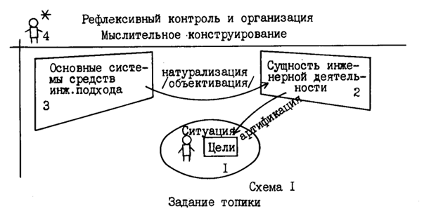
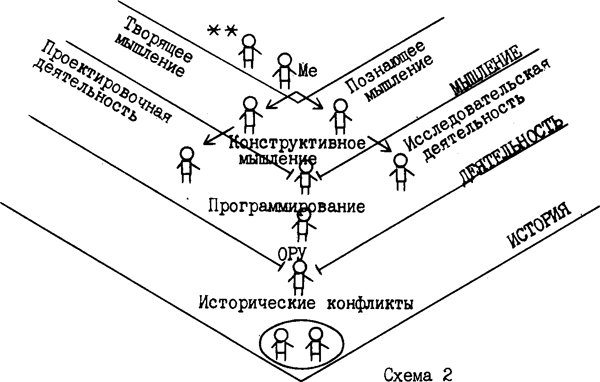
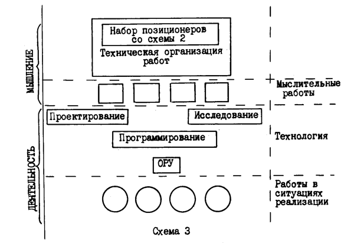

ИТ картина мира
Введение: Ситуация «здесь и теперь» на конференции
Мы собрались для того, чтобы подвести итоги большой серии работ, обобщить их и получить представление об инженерной деятельности (инженерной мыследеятельности). Особо я бы выделил работы по этой теме, проделанные в оргдеятельностных играх, в частности, на ОДИ-57 в Одессе, ОДИ-63 в Обнинске, ОДИ-71 в Ульяновске, где были сделаны существенные прорывы по отношению к тем представлениям об инженерии, инженерной деятельности и мыследеятельности, которыми мы располагали в 1975-81 годах. (См.: [1] и[2]). Эти работы задают вторую рамку, на которую я ориентируюсь. Третья рамка задана современной социо-кулътурной ситуацией. Я выделю аспект этой ситуации, который, на мой взгляд, представляется важнейшим.
Мы сегодня живем в очень сложном мире, а точнее, в условиях смены картин мира. Происходит переход от натуралистической к искусственно-технической картине мира. Это исторический процесс, продолжающийся уже более 100 лет. Мы находимся в этом процессе и попытки сформировать представление об инженерной деятельности и мнследеятельности в первую очередь ориентированы на строи?тельство искусственно-технической картины мира.
Цели доклада
Во-первых, я хотел бы начать работу по строительству понятия об инженерной деятельности или мыследеятельности. Вторая цель: я предполагаю, что для участия в этой работе и при обсуждении того, что будет излагаться в докладе и фиксироваться на доске, необходимо реализовать инженерный подход. Обсуждение подхода, в котором будет вестись строительство понятия (или искусственно-технической картины мира), есть основной критерий для понимания того, что строится, для анализа, оценки и критики всей этой работы. Третья цель. Для того, чтобы намеченную работу развернуть (строить понятие об инженерной деятельности в рамке инженерного подхода), необходимо организовать мыслительное пространство, т.е. задать основные топы-места и подпространства, двигаясь в которых я буду строить рассуждение.
Двигаться в достижении этих целей я буду, начиная с последней. Начну со строительства топики, а затем, работая в инженерном подходе, попытаюсь дать наброски к понятию об инженерной деятельности или мыследеятельности. При этом, все, что будет делаться, я сразу же буду рефлексивно обсуждать и фиксировать.

1. Первая часть: Мыслительное конструирование. Я начинаю обсуждать принципы и системы средств, с использованием которых должно строиться понятие. Задав основные рабочие подпространства, я теперь вхожу в подпространство 3 (по сх.1) и полагаю исходную рабочую позицию. Она должна быть двойной: с одной стороны — это позиционер, который работает как методолог, а с другой — рефлексивная запределиващая позиция. Я различаю здесь два типа рефлексии: трансцендирующая, т.е. такая рефлексия, которая дает возможность переброса в мысли от одной системы средств или действительности к другой, и рефлексия запределивающая, которая организована в тех же средствах, что и рабочая методологическая позиция. С одной стороны, рефлексивная позиция с двумя звездочкми дает запрет на рефлексивные «свечи», а с другой — контролирует работу по созданию соответствующих теме различении и ограничений. Из исходной рабочей позиции дальше разворачивается позиционная карта. Эта карта разделена на три зоны: мыслительные позиции, типодеятельностные позиции, исторические конфликты (схема 2).

В первой зоне, двигаясь от исходной рабочей позиции, я выделил две базовые траектории. Одна траектория-движение в «познающем мышлении», другая — движение в «мышлении творящем». Различение этих двух траекторий заимствовано у Гегеля: мышление творящее — это мышление над мышлением, а мышление познающее — это мышление, которое определенным образом захватывает эмпирию. В следующей зоне мышление познающее разворачивается в серию позиций, связанных с исследовательской деятельностью или с исследованием как деятельностью. А мышление творящее разворачивается в серию позиций, связанных с проектированием или проектировочной деятельностью. Очень важной является позиция, которая задает связь и переход от подпространства мыслительной работы к подпространству деятельности. Это позиция, в которой реализуется система средств конструкторского мышления или работа конструирования. Работа конструирования проводится в мышлении, но всегда — на том или ином материале, в данном случае — на материале деятельности. Конструкторское мышление создает системы исследовательской работы, и тем самым познающее мышление включается в исследовательскую деятельность, и, соответственно, организует творящее мышление в системах проектной деятельности.
Следующая зона — исторические конфликты, которые задают смену картин мира и рамок социо-кулътурной ситуации. Переходные позиции от зоны типов деятельности к историческим конфликтам это позиция организатора, руководителя и управленца, и промежуточная, обеспечивающая оргуправленца и связывающая исследовательскую и проектную работу, — позиция программиста. Конструктор, программист и оргуправленец осуществляют связь методологически организованного мышления с ситуациями, в которых разворачиваются конфликты людей или социальных групп в истории.
Этот набор систем средств и позиций является минимально необходимым для разворачивания искусственно-технической картины мира.
Натурализация (или объективация) средств
Прежде чем перейти к обсуждению структуры подпространства 2, несколько слов о существе траектории перехода — процессах натурализации (или объективации). Поскольку обсуждается тема «Сущность и онтология инженерного мышления и инженерной деятельности». Поэтому, требуется пояснить, почему кроме понятий «сущность» и «онтология» при обсуждении темы употребимы такие понятия, как «картина мира» и , далее, «метафизика». Причем наиболее значимым для моего доклада является понятие «картина мира».
Несколько философских и исторических реминисценций. Понятие «метафизика» ввел Александрийский библиотекарь Андроник Родосский, приводивший в порядок труды Аристотеля, — так. он назвал книгу, шедшую после «Физики». Сам Аристотель называл эту книгу «Началами философии» и фиксировал там базовые принципы, на которых строилась вся его работа. В XVII веке в ходе работ по выделению базовых принципов философии Г. Лейбница вводится (сначала Гокклениусом, а затем Хр.Вольфом) понятие об онтологии. Таким образом, различение метафизики и онтологии задается скорее всего сдвижками в истории и сегодня мы употребляем понятие об онтологии, не очень представляя себе, чем же метафизика принципиально отличается от онтологии. Когда я стал с этим разбираться, то зафиксировал следующее: если метафизика как особая форма выделения первооснов или принципов строилась после физики, то онтология строится независимо или до физики.
Гегель первым поставил задачу создать завершенную систему категорий, за счет которых может быть обеспечено выведение друг из друга всех наличных в культуре онтологических законов и идеальных объектов науки и может быть построена картина внутреннего становления всей природной и духовной действительности. И в своей работе «Наука логики» он начала онтологической работы реализовал. Идея Гегеля о том, что целью философии является выход к мировой тотальности и построению того, что можно было бы назвать всеобщим конкретным понятием, и является тем ориентиром, с которым работает онтолог или тот, кто занимается онтологической работой.
Работа по строительству понятия об инженерной деятельности и мыследеятельности идет в ориентации на онтологии, на выход к всеобщему конкретному понятию. Поэтому картина мира — промежуточный продукт в ходе этой работы. Мы движемся от смысловых заготовок, от некоторой метафизики, через ряд картин мира к онтологии или к логически отработанной форме.
Движемся мы в этой работе в рамках инженерного подхода, реализуя то, что можно назвать техникой, поскольку производим целевую натурализацию и далее — артификацию тех смыслов и фрагментов содержания, которые связаны или могут быть связаны с инженерной деятельностью и мыследеятельностыо. Сейчас я двигаюсь по траектории натурализации (объективации) и выхожу к понятию. А дальше буду намечать траекторию артификации. Тем самым я утверждаю, что строя понятие об инженерной деятельности или об инженерной мыследеятельности, я должен свою работу организовать в ориентации на строительство искусственно-технической картины мира, в ориентации на ход к онтологии и строить свои действия технически в двух траекториях — натурализации и артификации. Теперь я перехожу к разворачиванию подпространства 2 (по схеме 1). Это подпространство сущности инженерной деятельности является промежуточным продуктом в движении к онтологии инженерной деятельности и мыследеятельности (схема 3). В его рамках необходимо задать перечень работ, которые могли бы осуществляться позиционерами введенными на схеме 2.

То есть это пространство, в котором натурализуются системы средств и происходит их объективация в типологии работ. Первый, важнейший тип работы — работа по строительству искусственно-технической картины мира. Тем самым, я беру схему 2 и сворачиваю ее в особое, ключевое, место на схеме 3. При этом набор позиционеров со схемы 2 еще должен быть обрамлен рамкой техники или технической организации работ по строительству этого позиционного пространства. Ниже разворачивается пространство мыслительных работ. Техники мыслительной работы, которые ориентированы на строительство всего набора позиционеров, принадлежат пространству творящего мышления. Подпространство познающего мышления задает ряд работ — различение и установления границ. Ниже по схеме идет слой работ, которые условно можно относить к плану деятельности. Особые связки этих работ можно назвать технологиями. Проектирование как деятельность и исследование как деятельность и есть связки вышележащих мыслительных paбот с материалом ситуаций. Мы реализуем эти работы, нормируя и организуя, а затем технологизируя деятельности. Ниже лежат такие виды работ, как программирование и оргуправление. Они также принадлежат плану деятельности и по сути дела есть особые технологические сборки из всех вышележащих работ. Движение задается сверху вниз: от искусственно-технической картины мира — к мыслительным работам, к работам проектирования, исследования, программирования, оргуправления.
Г. П. Щедровицкий: Это если работать в логике причины и детерминации, а не целевой. Если целевой — то все наоборот.
А. П. Зинченко: А я пока это не обсуждаю. У меня целевая детерминация принадлежит плану ситуации. Я обсуждаю организацию и иерархию этого подпространства. Нижний слой этой схемы (схема 3) — принадлежит плану деятельности — различные, формы организации работы в ситуациях. Условно их можно называть ситуации реализации. Здесь нужно вводить еще ряд членений, но я пока не буду усложнять. Можно выделять формы социальной организации, производственной организации, клубной организации, такие формы, как профессии, технологии работ на производстве, технологии в изобретательстве, технологии в образовании и т.д. Здесь выстраивается очень сложная типология ситуаций, в которой реализуются намеченные и лежащие выше типы работ. Ограничив второе подпространство, я проделал ход по прорисовке подпространства 2 (по схеме 1) и задал предварительную схему состава инженерной деятельности и мыследеятельности. На этом заканчивается вторая часть.
Третья часть. Поскольку тема сегодня: «Сущность и онтология инженерной деятельности», я бы сделал несколько выводов, относящихся к теме дня. Очень важным является вопрос, что означает изображенная здесь искусственно-техническая картина мира в ряду других картин мира.
В вводной части я утверждал, что мы сегодня существуем в ситуации, когда наша цивилизация переходит от натуралистической картины мира к искусственно-технической. Я попытаюсь чуть шире развернуть этот ряд и показать место искусственно-технической картины мира в нем, с одной стороны. А с другой — выделить некоторые принципиальные характеристики искусственно-технической картины мира по отношению к другим. В качестве принципиальных и важных я бы выделил три возможных картины мира, псевдогенетически предшествующих искусственно-технической. Первая — мифологическая, задает видение и представление о вселенной, которое имеет свои собственные законы жизни, независимые от человека.
Г. П. Щедровицкий: Правильно ли я Вас понял, что вы естественно-научную картину мира относите к мифологической?
А. П. Зинченко: Нет, о естественно-научной я буду говорить дальше.
Г. П. Щедровицкий: А как тогда понимать Ваше предыдущее заявление?
А. П. Зинченко: Я бы сказал, что в естественно-научной картине мира мы имеем ряд рудиментов предыдущих картин, в частности, и мифологической. Это один вариант ответа.
А другой вариант — каждая следующая картина мира осваивает предыдущую и включает ее в себя.
Г. П. Щедровицкий: Реально Вы мне не отвечаете, а рассказываете, как это получилось. А я Вас спрашиваю на уровне принципа. Вы должны либо сказать «нет», либо признать это.
А. П. Зинченко: Я это признаю, так как говорю, что мифологизм принадлежит натуралистической картине мира.
Вторую картину мира я условно называю механистической. Она складывается в рамках древнегреческой науки, строится на идее Платона о различении двух миров — на расчленении единого бытия на мир идей и мир теней и получает свое завершение в работах средневековых теологов. Фома Аквинский называл эти два мира миром горним и миром дольним. Независимый от человека мир мифа, живущий по своим законам, расслаивается в рамках механистической картины мира на два. При этом человек оказывается принадлежащим той части картины мира, которая принадлежит миру теней (миру дольнему). А существует еще мир идей (мир горний), куда помещено такое отражение человека, как бог. Поскольку механистическая картина мира создается в рамках древнегреческой натурфилософии и складывающей науки, то в нее закладывается принцип отражения: мир теней есть особое отражение мира идей.
В рамках третьей картины мира — натуралистической — происходит оестествление различения мира дольнего и мира горнего, богочеловек выводится из мира горнего в рамках борьбы с теологией и самой доктриной бога, а мир горний приобретает функции объекта со своими собственными, «естественными» законами.
Человек выводится вовне картины мира и выделяются три фокуса: человек как субъект, особое устройство объекта и мир знания. Знание отражает реальность и может выноситься на разный материал как законы его жизни. Итак, в рамках натуралистической картины мира различаются субъект и действительность природы (материал, живущий по своим собственным законам).
Четвертая картина мира — искусственно-техническая, которую я сейчас обсуждаю. По отношению к трем предыдущим она является объемлющей. Искусственно-техническая картина мира включает в себя человека, как изначально творящего эту картину. Позиция творящего всегда двойная: рефлектирует и размышляет по поводу своего будущего действия и работает как мыслитель-конструктор. Конфликт раздвоения позиций в искусственно-технической картине мира всякий раз и задает ее содержание. Творящий должен находиться вовне и обязательно одновременно внутри. Я разворачиваю позиционную схему, которая потом сворачивается в место на схеме пространства работ. Это первый принцип, относящийся к искусственно технической картине мира.
Отсюда и второй принцип. Если я могу обсуждать эту картину мира только в движении — в движении мысли по разным ее подпространствам, то искусственно-техническая картина мира существует в становлении. Она не может быть зафиксирована раз и навсегда, а всякий раз существует в становлении в ходе работ по ее строительству.
Г. П. Щедровицкий: Это значит, что Вы уже близко к Марксу перешли, если я Вас правильно понял.
А. П. Зинченко: Во вводном тезисе я говорил, что мы сегодня находимся в ситуации перехода от натуралистической к искусственно-технической картине мира. При этом я мог бы сослаться на Маркса, который об этом уже писал, но я этого не делал, так как понимаю, что это всем присутствующим и так понятно.
И последний принцип, также связанный с рядом предшествующих картин мира. Искусственно-техническая картина мира должна освоить и ассимилировать все предшествующие. И обязательно для каждой предшествукщей определить то или иное место в своем пространстве.
Это три основных прицнипа, относящихся к теме «Сущность и онтология инженерного мышления инженерной деятельности», но их можно разворачивать и по другим темам конференции.
Дискуссия по докладу А.П. Зинченко
А. П. Зинченко: Мне поступил вопрос: «Понятие об инженерной деятельности у Вас уже есть или оно должно появиться?», но я уже в докладе сказал, что это понятие особое — оно существует в становлении.
Г. П. Щедровицкий: Как марксист, Вы этот вопрос снимаете, и говорите, что к Вам это не относится, у Вас все в становлении (смех в зале). А на вопрос, есть или нет, еще Аристотель показал, что ответить на этот вопрос нельзя.
А. П. Зинченко: Второй вопрос: «Не выводится ли у Вас онтология из методологии?» Я бы ответил утвердительно.
Третий вопрос: «Тогда у Вас должны быть какие-то определенные представления об инженерной деятельности?» Я их изложил в докладе.
Вопрос к А.П.Зинченко: Не является ли Ваше утверждение, что мир сейчас переходит от натуралистической картины мира к искусственно-технической, само натуралистическим?
Г. П. Щедровицкий: Является, но теперь этот натуралистический заход снят искусственно-технически, и реально Зинченко говорит, что мир переходит туда, если я его туда двигаю. А если я его двигаю в другую сторону, он переходит в другую. А. П. Зинченко. Я принадлежу к тому сообществу, которое ориентируется на искусственно-техническую картину мира. Тем самым у меня две позиции: искусственно-техническая и включенная натуралистическая. Я посмотрел и вижу, что переходит, а потом думаю; а я что делать буду? Буду строить искусственно-технический мир!
Вопрос: А где Вы находитесь, когда соотноситесь с миром, который переходит?
Г. П. Щедровицкий: Неправильный вопрос Вы задаете. Зинченко ведь ответил. Он глядит на мир, но его мир является становящимся, а становление имеет два разных механизма. Поэтому вопрос ваш пролетает мимо. Где он находится? Он находится в искусственно-технической позиции и глядит тем глазом, который у него содержит натуралистический аспект или ориентацию. У него два глаза уже, когда он заявил свое определение искусственно-технической позиции. Один глаз — натуралистический, другой — искусственно-технический. Один глаз закрыт, другим видит становящийся мир и борьбу. Открывает второй глаз и говорит, что все зависит от того, на какую позицию я сам встану. Встану на позицию искусственно-техническую — она победит.
Вопрос: Что Вы надеетесь получить в своем методологическом подходе?
А. П. Зинченко. Я бы отвечал, используя цитату из Платона-трактат «Политик» ; «Арифметика и некоторые другие сродные ей искусства чужды делу и дают только чистые знания. А строительное искусство и вообще все ремесла обладают знанием, как бы вросшим в дела. И таким образом они создают предметы, которых раньше не существовало». И далее я бы утверждал, что Гегель и немецкая классическая философия дали нам чистые знания о деятельности и мышлении, которые мы теперь должны так развернуть, обсуждая инженерную деятельность и мыследеятельность, чтобы их можно было встроить в эти дела. Мы используем знание о понятийной и категориальной конструктивной работе для того, чтобы совершенствовать инженерное дело и инженерное образование, встраивать здание инженерии в наши практические дела.
Г. П. Щедровицкий (к задававшему вопрос): Вы удовлетворены ответом?
Вопрос: Нет. Я не понимаю, что мы можем здесь выловить из того, чего не сделали немцы, которые в совершенстве владеют этим категориальным аппаратом?
Г. П. Щедровицкий к Зинченко А. П. Вы поняли недостаток своего ответа?
А. П. Зинченко. Да, я понял. Дальше нужно пояснить важнейший, на мой взгляд, момент. Знание, которое мыслилось в этом докладе, это знание по поводу деятельности и работ. И все значки на моих схемах — значки предметов таких, как теория деятельности, теория мыследеятельности. Я обсуждаю знание — о работах и, тем самым, утверждаю, что такого рода представления можно дальше разворачивать в практическую деятельность, переводить в работы. А Гегель обсуждал мышление по поводу мышления, категориально и понятийно. Это работа могла разворачиваться только в плане чистого мышления.
Г. П. Щедровицкий. Александр Прокофьевич не хочет выявить что-то такое, чего не сделал Гегель или ученики Гегеля. Он принимает это на уровне знания. И смысл методологической работы в другом — чтобы теперь это реализовать, т.е. осуществить в схемах анализа, может быть, выразить на языке методик (это опять будут знания), но обязательно реализовать. Тогда я понимаю его ответ так: современная методология, прежде всего, реализует то, что было на уровне знаний в организации мышления и деятельности, и в этом ее назначение и функция.
Вопрос: Есть ли примеры чего-то доведенного до конца, до какого-то результата? Или это все еще впереди?
Г. П. Щедровицкий. Надо в каждом своем действии реализовать знания, накопленные Гегелем и другими. Поэтому вопрос ваш, вроде бы, не очень точен. Если Вы спрашиваете, что делает методология, то мышление и деятельность организует в соответствии с накопленными знаниями. И что в этом смысле А. П. Зинченко отвечает? Он говорит: «Я во всех своих рассуждениях реализовал те принципы, которые объявил». И здесь бы я добавил от себя: в отличие от того, что делал Вадим Маркович Розин. Вадим Маркович переводил все, как Вы требуете, на уровень знаний. А Зинченко говорит: «Не на уровень знания я это не перевожу, а я теперь так работаю». И смысл методологии в том, что она работает, переводя все это в практику.
В. М. Розин. Есть еще одно отличие. Я говорил, что нельзя просто изучать инженерную деятельность. Так, как Вы это делаете, строя эту картину, Вы усугубляете кризис. Я говорил, что нужно принципиально менять направление исследования, что Ваша методология без ценностей, без ответа на вопрос: нужно нам это или нет и т.д.
Г. П. Щедровицкий: Отлично. Но тогда Вы должны были ответить на мой вопрос, заданный Вам во время Вашего доклада: чего же так испугался Хайдеггер? Чего боитесь Вы? Когда Вы ответите на вопрос, чего Вы боитесь и что, с Вашей точки зрения усугубляет нынешнее положение… Я понимаю, ждать продовольствия не надо, достаточно продовольственной программы, но люди-то ведь хотят продовольствия. Теперь Вы мою точку зрения относительно того, что продовольствия не надо, разделяете, но придется ответить на вопрос: Что нового Вы создаете? И что Вы сказали? Вы понимаете, что у меня содержится подозрение, что Вы ничего не сказали. Теперь я понял. Вы предъявили мне личное обвинение в том, что методологические разработки, исследования деятельности и мышления поддерживают то безобразие, которое называется «человеческая жизнь». И в этом смысле я еще надеюсь дальше посмеяться над Вашими надеждами прекратить человеческую жизнь эпистемологически. Но Вам надо отвечать: чего Вы боитесь, что Вас пугает в этом мире? И что такого страшного Вы сказали, когда произнесли, что люди есть придатки техники, они живут на функциональных местах? Это пункт очень важный, хотя не методологический, а философской дискуссии.
А. П. Зинченко: Мне бы хотелось отнестись к «демиургическому комплексу», в докладе М. В. Розина. В этой фигуре речи заложено отношение к технике — техника есть мистическая сила, за которой стоит некий демиург. На мой взгляд, пока это отношение будет сохраняться, мы будем иметь все негативные последствия и деградацию, которой Вы, Вадим Маркович, так боитесь. То, чем занимаемся мы, есть смена точек зрения. Давайте опишем Ваш, «демиургический комплекс», и тогда может оказаться, что это голый король, им можно управлять и не доводить дело до деградации, а жизнь организовывать в наших целях и интересах.
Г.П.Щедровицкий. Благодаря замечанию Вадима Марковича противоречия начинают прорисовываться.
Вопрос: Чем отличается методология инженерной деятельности от инженерной деятельности?
Г. П. Щедровицкий. Вопрос очень интересный, может быть, в результате этого совещания мы все сможем на это ответить.
Как я это понимаю. Первое. Чем отличается любовь, не зарегистрированная в загсе, от зарегистрированной в загсе? На мой взгляд, только одним: первая — зарегистрированная в ЗАГСе, а вторая — нет. В. В. Сааков к Игре-71 в Ульяновске опубликовал статью: «Инженерия инженерного образования». В этом смысле методология есть инженерия инженерии, поскольку методология только вид инженерной работы, но особым образом зарегистрированная и оформленная. Там приходится ориентироваться на лидеров, знать Хайдеггера и другие тонкости, особенно если Вы работаете в Институте философии. Если Вы принадлежите ММК (Московскому методологическому кружку) — надо знать ценности и символы, о которых говорил Вадим Маркович, без этого не допустят. Вот и все.
Итак, инженерия, методология, наука есть разные формы организации мышления и деятельности. Следовательно, различие между ними — в формах организации. А дальше следует все то, что перечислялось, есть институциональные формы организации (например, институт философии), есть ценности, есть методологические формы организации. Каждая форма организации имеет свой набор форм и средств. Все зависит от того, под какие знамена Вы становитесь и под какими знаменами терпите поражение или побеждаете.
Реплика задавшего вопрос: Я понял, парадигмы разные.
Г. П. Щедровицкий. Так точно, парадигмы разные. Следовательно, чтобы их различать, надо задавать перечень парадигм.
Вопрос: Зачем эта методологическая надстройка?
Г. П. Щедровицкий. Красивый вопрос. Если китайские джонки захватывают проходящие мимо корабли под китайским флагом, то китайское правительство должно компенсировать ущерб. А если захватывают под пиратским флагом — надо пиратов сначала поймать, но при этом бессмысленно надеяться, что они возместят ущерб. Можно себя только утешить тем, что повесить их на реях. Я Вам отвечаю, что методология есть пиратский флаг и поэтому он дает возможность действовать свободно и не спрашивать разрешения у начальства: можно ли получить этот результат или нет? Этим бы я ограничился, ответ шуточный, но он точно отражает существо дела.
Реплика: Смысл ответа тогда в том, что методология, в отличие от других форм организации мышления и деятельности, безответственна, поскольку флаг у нее пиратский.
Г. П. Щедровицкий: Нет, извините. Вы неправильно меня поняли. Пират отвечает своей жизнью перед теми, кого захватит.
В сборнике «Системные исследования-81» я попытался ответить на вопрос, что такое методологическая парадигма и как она строится. Я понимаю, что Вы меня проверяете на вшивость, я Вам ответил, и смысл с пиратским флагом становится очень большим. Методология — «пиратская организация»: хотите повесить — сначала поймайте.
Вопрос, заслуживающий отдельного рассмотрения: так в чем апокалиптичность нашего нынешнего существования и что предосудительное подкрепляет и поддерживает методология и за что надо современный мир вместе с методологией вешать на реях? Вадим Маркович, приготовьте ответ. За что сражаемся?
Реплика: Как я понимаю разницу между методологией и инженерной деятельностью? Инженерная деятельность — это процесс создания чего-то.
Методологию я понимаю как способ организации деятельности с точки зрения ее оптимизации.
Г. П. Щедровицкий: Я Вас понял, но не могу с Вами согласиться. На мой взгляд, если Вы принимаете парадигму системного подхода, то должны понимать, что и инженерная деятельность может быть представлена как процесс, и методологическая деятельность может быть представлена как процесс. Каждая из деятельностей может быть представлена как процесс. Хотя очень важна мысль Вадима Марковича, что это сегодня для деятельности и мышления есть отсталый способ представления. Мир сегодня перешел к другим представлениями. Я правильно Вас понял, Вадим Маркович, имея в виду то, что нужны представления сферные? Поэтому любая деятельность, любое мышление могут быть представлены либо как процесс, либо как структура (функциональная или другая).
Коллега, задавший вопросы, начал работать в терминологии Томаса Куна и нынешней мировой: парадигмы у нас разные. Да, говорю я, парадигмы разные. Разные парадигмы.
Литература
1. Разработка и внедрение автоматизированных систем в проектировании. Теория и методология. М.:Стройиздат, 1975.
2. Щедровицкий Г. П. Принципы и общая схема методологической организации системно-структурных исследований и разработок. //Системные исследования. Методологические проблемы. 1981, М., Наука, 1982, с. 193-227.
Обнинск (1989).
 All rights reversed
All rights reversed
Исполнение — Артём Резников